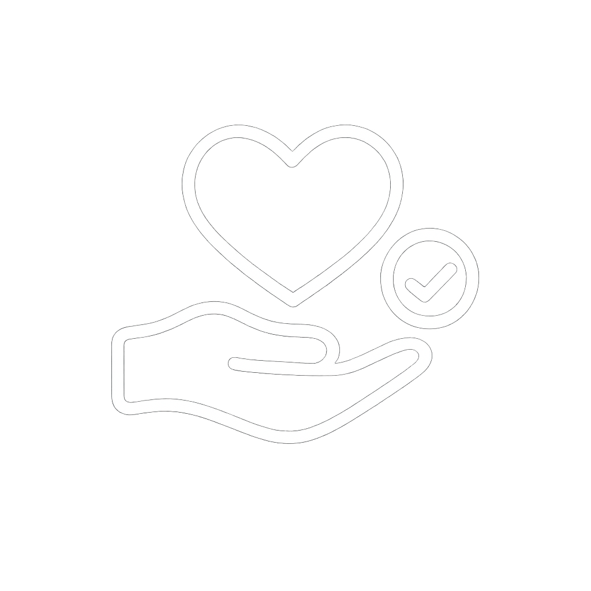
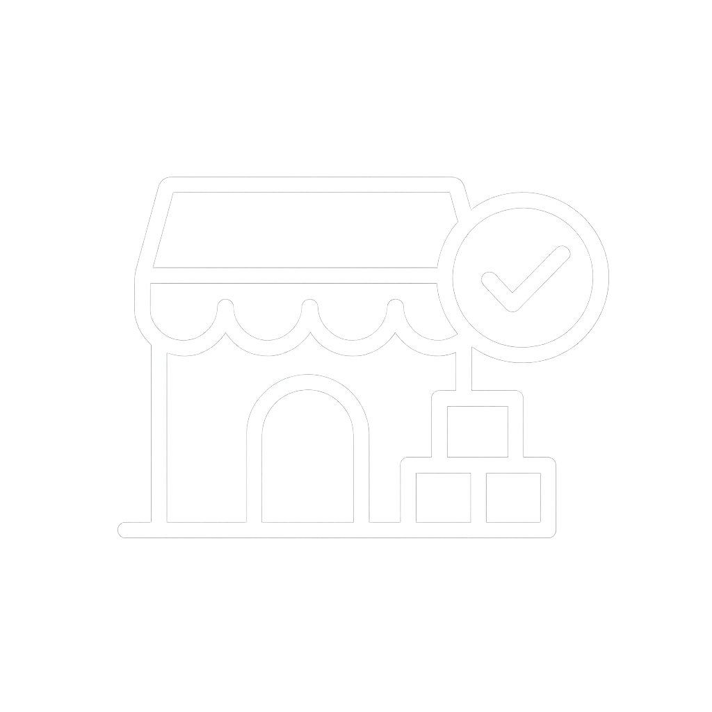

Arrecadação de Alimentos
Alimentos perecíveis e não perecíveis, incluindo frutas e verduras.
Alimentos perecíveis e não perecíveis, incluindo frutas e verduras.
Transformamos doações em refeições completas para quem precisa.

Com planejamento e cuidado, transformamos desperdício em oportunidade.

Distribuímos de forma organizada, garantindo que cada refeição chegue a tempo.
Mais de 8 mil famílias atendidas de forma eficiente.
Mais de 1,5 mil voluntários fortalecendo nossa rede de solidariedade.

Mais de 5 mil doadores ativos apoiando a causa.

14,5 mil pontos de coleta ativos garantindo eficiência na distribuição.
O Mesa Solidária é uma plataforma digital que conecta famílias beneficiárias, doadores, voluntários e pontos de coleta para reduzir a fome e o desperdício de alimentos.
Com tecnologia simples e acessível, organizamos a jornada da doação desde o cadastro até a entrega final, garantindo mais transparência, segurança e impacto social.
Quem precisa de apoio alimentar com dignidade, menos burocracia e acesso organizado às doações.
Pessoas físicas e empresas que desejam doar alimentos com segurança, praticidade e acompanhamento do impacto.
Quem quer ajudar com tempo, transporte e disposição, acumulando pontos, recompensas e experiências transformadoras.
Pequenos comércios e empresas que podem ser espaços seguros para receber, armazenar e organizar doações.
Famílias, doadores, voluntários e pontos de coleta se cadastram gratuitamente, com validação básica de dados.
O doador informa o tipo de alimento, quantidade e prazo, escolhendo entregar em um ponto de coleta ou solicitar retirada.
Voluntários recebem rotas organizadas, retiram alimentos em pontos de coleta e fazem as entregas às famílias cadastradas.
Doadores, voluntários, pontos de coleta e famílias recebem confirmações e relatórios de impacto social das ações.
Tratamento de informações pessoais seguindo as diretrizes da LGPD, com políticas claras de privacidade.
Consulta de documentos e antecedentes para garantir mais segurança às famílias e aos pontos de coleta.
Acompanhamento das rotas e confirmações de entrega dentro da plataforma, com registros de cada doação.
Incentivo à doação responsável, alinhada à legislação de combate ao desperdício de alimentos.
Contribuímos para reduzir a insegurança alimentar conectando alimentos que sobrariam a famílias que mais precisam.
Ajudamos a diminuir o desperdício de alimentos ao organizar doações, rotas e entregas de forma eficiente e transparente.
Ceda um espaço para receber e armazenar doações e ajude a aproximar solidariedade e comunidade.
Receba relatórios periódicos com quantidade de doações, famílias impactadas e benefícios gerados.
Conecte responsabilidade social, sustentabilidade e engajamento local em uma iniciativa contínua.